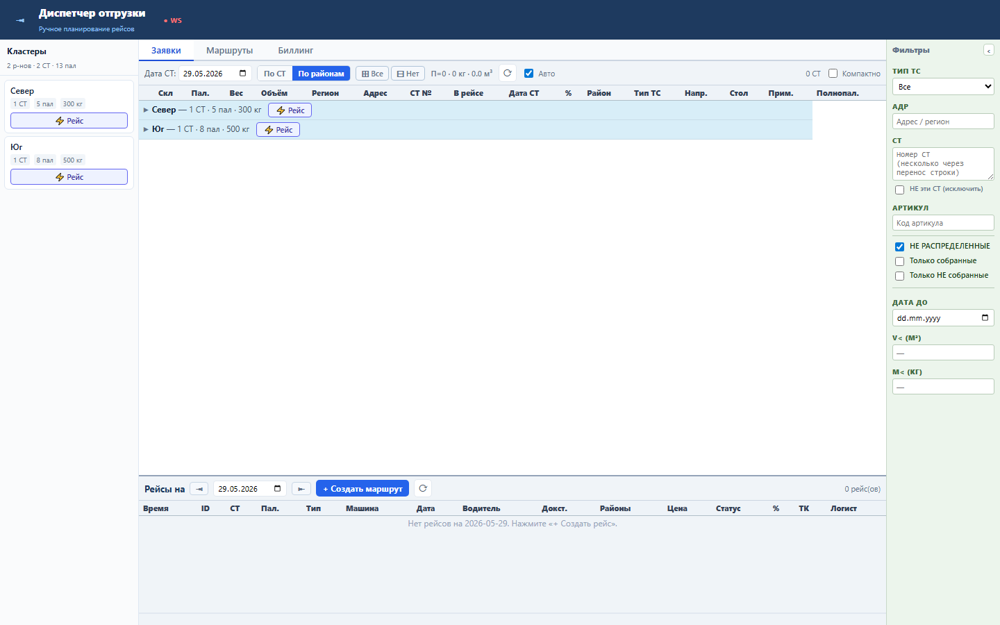
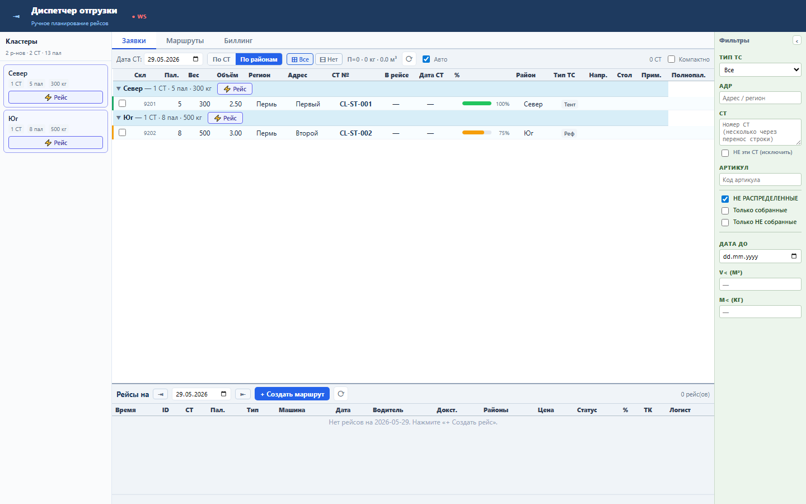
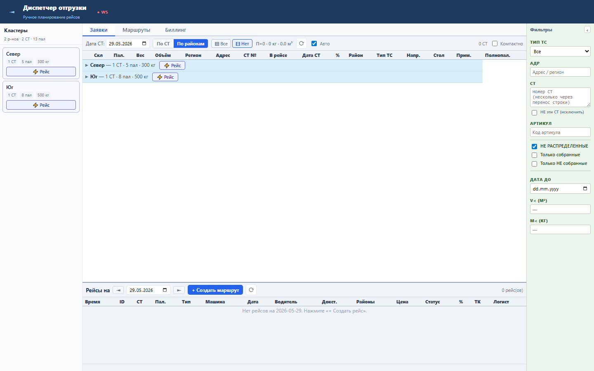

Блок ускоряет работу в кластерном режиме, когда диспетчеру нужно быстро увидеть все СТ по районам или снова свернуть список.
Состояние раскрытия хранится в expandedRaions. Кнопка «⊞ Все» записывает все RAION из clusters, «⊟ Нет» очищает набор.
Sprint 58 закрыт functional, load и UI smoke проверками.


